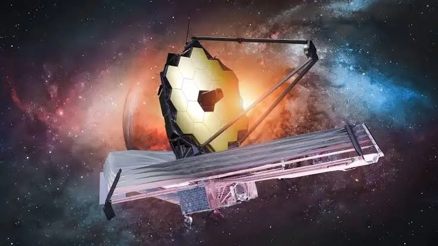
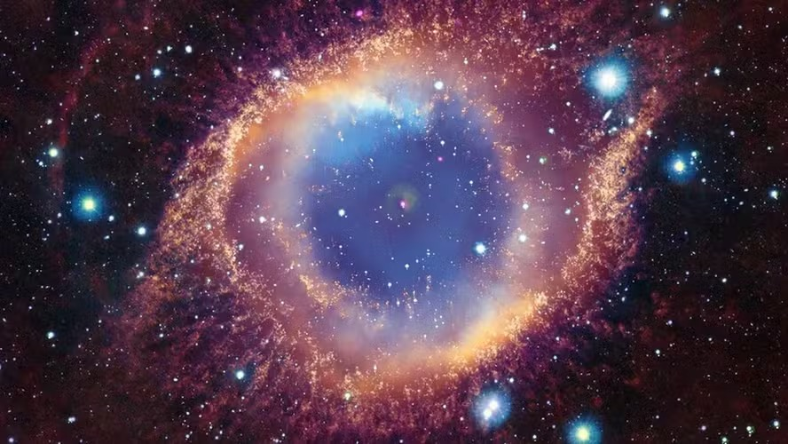
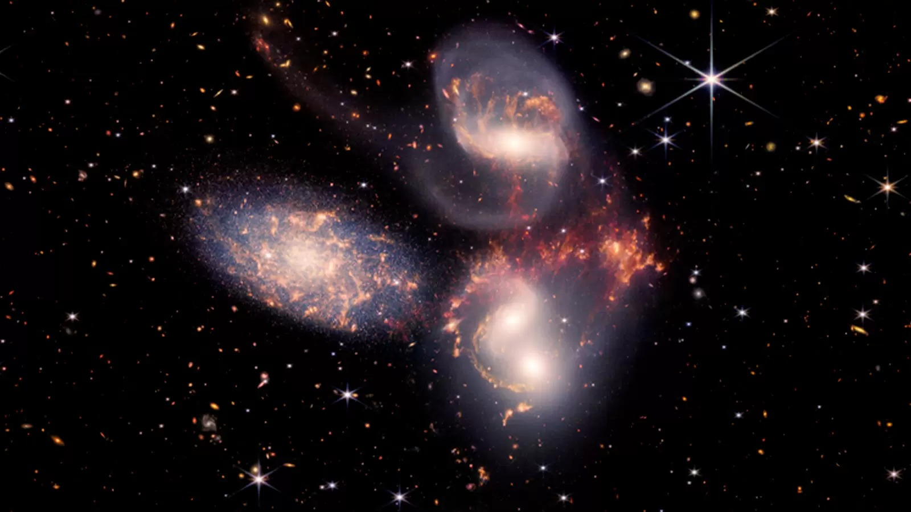
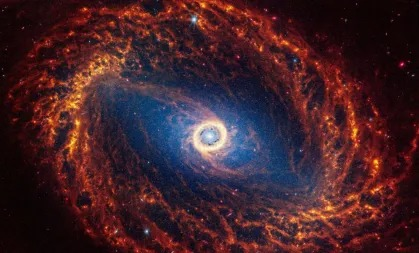

Somos um portal dedicado à divulgação de informações sobre o Telescópio Espacial James Webb e os avanços da exploração espacial.
Nosso objetivo é reunir conteúdos que ajudem estudantes, curiosos e apaixonados por astronomia a conhecer melhor uma das maiores conquistas tecnológicas da humanidade.
Acreditamos que a ciência tem o poder de inspirar pessoas e ampliar a compreensão sobre o universo em que vivemos.
O Telescópio Espacial James Webb representa uma nova era para a astronomia. Com equipamentos modernos e alta capacidade de observação, ele permite estudar regiões do espaço nunca vistas com tanto detalhe.
Neste site você encontrará informações sobre sua missão, funcionamento, descobertas e importância para a comunidade científica mundial.
Nosso compromisso é apresentar conteúdos de forma clara e acessível, aproximando o público das descobertas que estão transformando a maneira como enxergamos o universo.
A cada nova observação, o James Webb ajuda cientistas a responder perguntas importantes sobre a formação das galáxias, das estrelas e até mesmo sobre a possibilidade de vida em outros planetas.
Mais do que observar o espaço, o James Webb nos permite olhar para o passado do universo e compreender melhor nossa própria origem.


